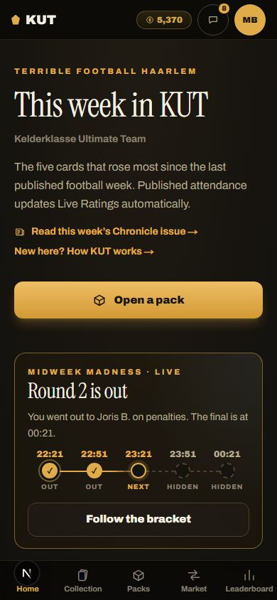

1Home doesn't lead with what's happening now
What a member sees. On a phone, Home opens with a kicker, a 48 px "This week in KUT", the subtitle "Kelderklasse Ultimate Team", a paragraph about risers and two links. That's 390 px before anything you can act on. Then "Open a pack", and only then the Midweek card. At 20:50 on a Wednesday, with round 2 just out, the live evening is the third block on the page. The same goes for the +50-coin session report and the injury check-in, the two other things on Home with a deadline.
Why it matters. Home is where every link from the group chat lands. It's the only page every member sees every visit, and it currently spends its best space on things that never change. The nav audit compressed the header on Market, Collection and Packs; Home kept the desktop masthead.
Direction. A short header, then a "now" stack ordered by deadline: the Midweek evening while it runs, otherwise the earliest deadline among picking, the report and the check-in. Then risers, then activity. "Open a pack" stays a button, just not above a live event.
